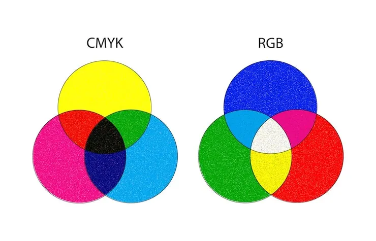

Kleurmodellen zijn manieren om kleur te definiëren voor de computer om zo accuraat weer te geven.
Een van de meest gebruikte manieren is RGB waarbij rood, groen en blauw boven op een zwarte achtergrond worden toegevoegd. RGB wordt gedaan met de pixels in het scherm. Elke pixel bestaat uit een heel klein rood, groen en blauw lampje dat samen op 256 sterktes kan. Omdat er hier licht bij elkaar wordt gedaan is het resultaat van ze allemaal helemaal aan te zetten de kleur wit.
De kleuren worden genoteerd als ( 0-255, 0-255, 0-255) => (rood, groen, blauw) om geel te noteren zou je (255, 255, 0) noteren. Voor de computer worden de waarden overgezet naar het binair stelsel Waarbij 8 bits of 1 byte wordt gebruikt voor elke kleur bv. 255 word 11111111 of 6 wordt 00000110 (kan ook genoteerd worden als 110)
Naast RGB is er ook nog CYM(k) waarbij in plaats van rood, groen blauw er cyan, magenta en yellow gebruikt en niet op een zwarte achtergrond maar op een witte achtergrond geplaatst. Dit systeem wordt gebruikt voor printers waar er zwart bij zit omdat je met alleen CYM niet goed zwart gemaakt kan worden. Er is een wat vereenvoudigde formule om van RGB naar CYM(k) te gaan (255-R, 255-G,-255-B)
